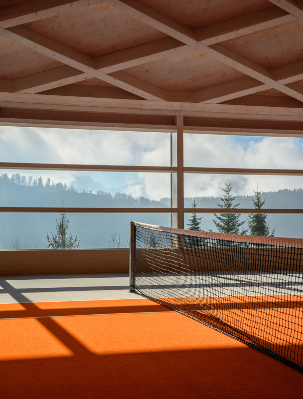

Alpine courts 500 meters above Lake Lucerne — the best backdrop in the sport, on a resort ridge all its own.
On my featured page I make a big claim about Bürgenstock: alpine courts 500 meters above Lake Lucerne — the best backdrop in the sport. That's what put it at #03 in my hotel tennis ranking, including an indoor court wrapped in timber and framed by the peaks, so the setting doesn't disappear when the weather does.
The tennis is the headline on my list, but Bürgenstock is really a resort village on its own ridge — hotels, restaurants, and one of Europe's most serious spa operations sharing a private mountain above the lake.
Of the three Swiss and alpine properties on my tennis ranking, this is the one I book as a complete destination rather than a stop: the scale means you can settle in for days without repeating an experience.

The best backdrop in the sport. Courts 500 meters above Lake Lucerne — my #03 worldwide, and the view genuinely improves your forehand's mood.
The timber-wrapped indoor court. An alpine court framed by the peaks — weatherproof tennis without losing the setting.
A resort at village scale. Multiple hotels, serious dining, and a spa operation that anchors the whole ridge — days of programming without leaving the mountain.
Choose your hotel within the resort. Bürgenstock is several properties on one ridge, each with a different personality — tell me the trip and I'll place you in the right one.
It's a destination, not a stopover. Give it three nights minimum — the ridge rewards guests who settle in.
Pair it with Gstaad. The other Swiss stop on my tennis list is the Gstaad Palace — the two make a spectacular alpine circuit by car or rail.
The best backdrop in the sport, attached to one of Europe's great resort estates — Switzerland's easiest yes.
Rates through me are identical to booking direct — the perks are not. As a Fora advisor, my clients receive a space-available upgrade, daily breakfast, and a hotel credit — plus my direct line to the team on property before and during your stay.
Check Availability